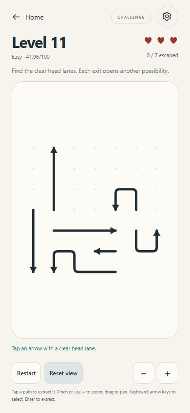
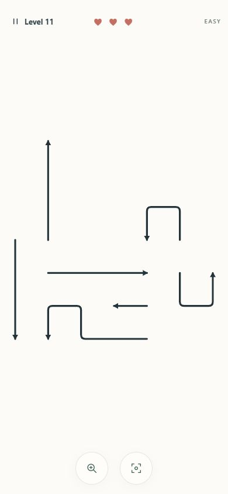
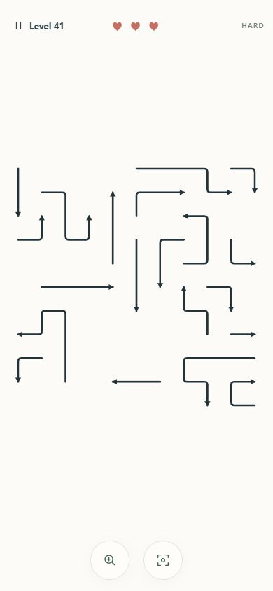
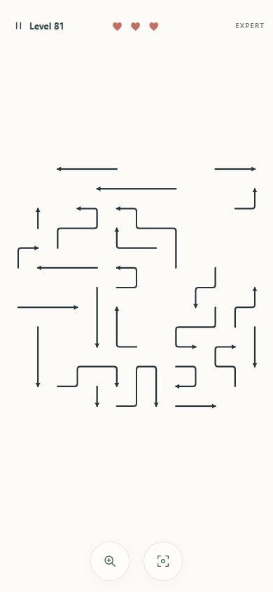

Full-screen gameplay — same Level 11, 390×844
Original browser captures, not mockups. Identical procedural-v1 seed and seven paths. The Canvas fills the viewport; square puzzle geometry keeps its aspect ratio.

BeforeCanvas 340×524; visible stroke bounds 268×258px.

AfterCanvas 390×844; safe play region 358×676; visible stroke bounds 346×340px. HUD 56px; floating buttons 56px.
Actual unchanged hard and expert levels

Level 4111×11, 20 interactive paths, 67.77% grid occupancy.

Level 8113×13, 25 interactive paths, 62.13% grid occupancy.
UI scaling is delivered. Taller, longer, more densely nested compositions require a separate procedural-v2 recipe. Read the proposal; it is not implemented here.
Measurements and capture limitations: pixel analysis, DOM bounds, complete handoff.